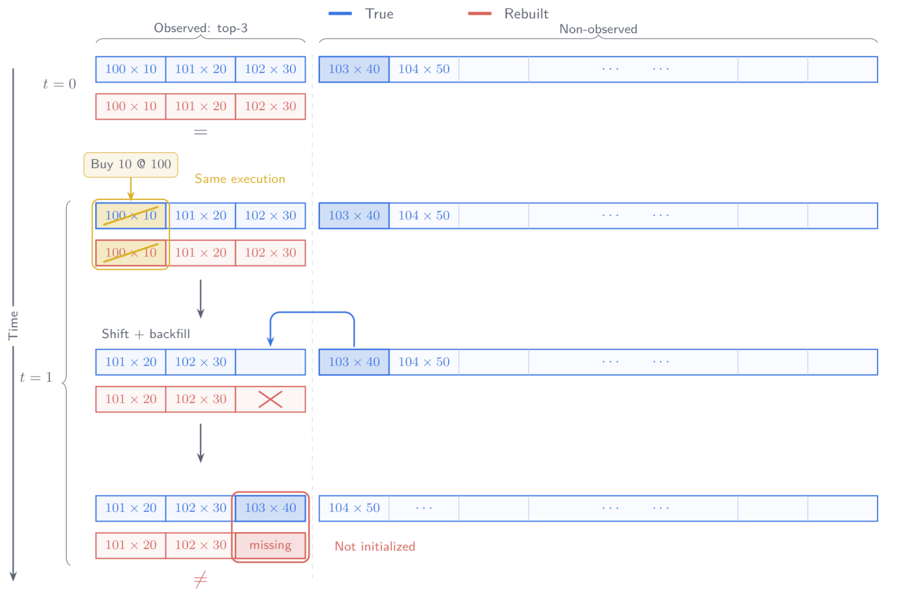
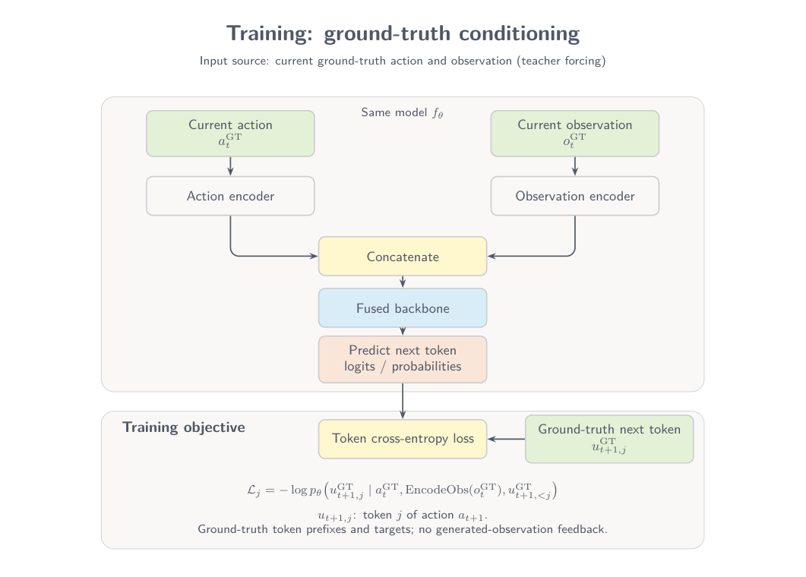
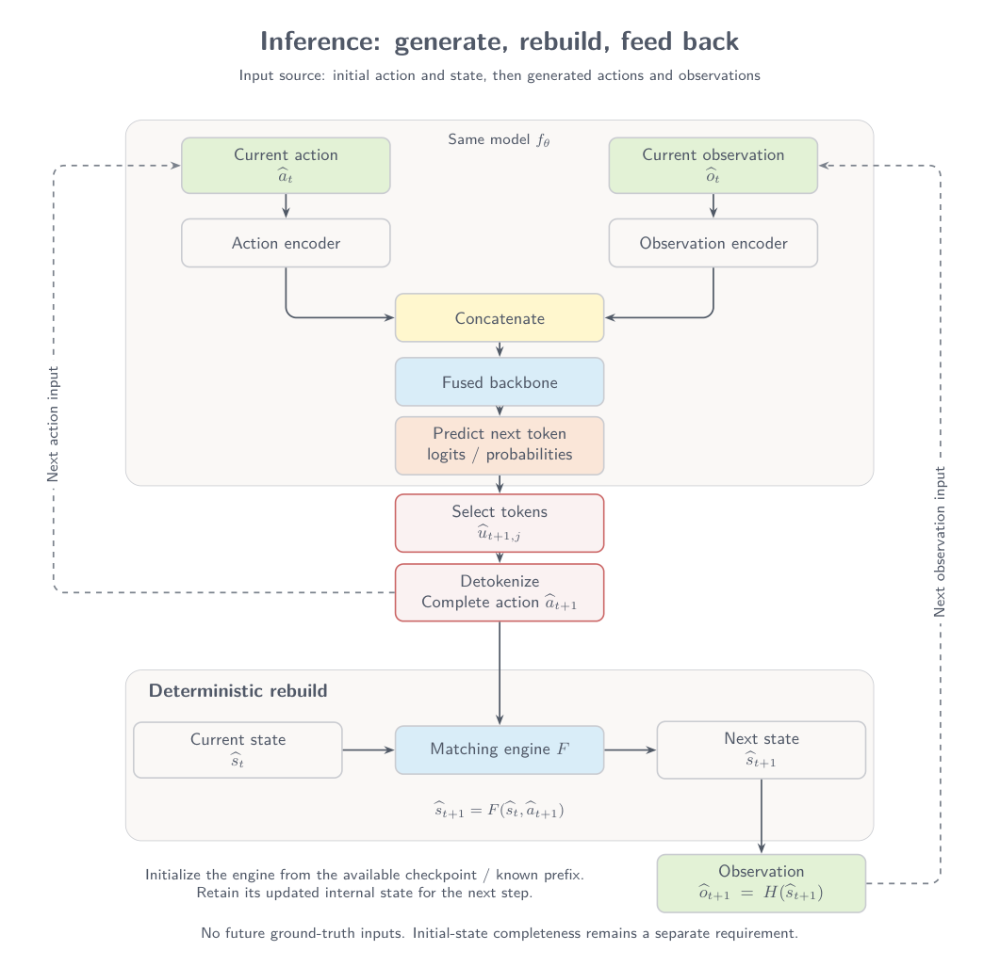
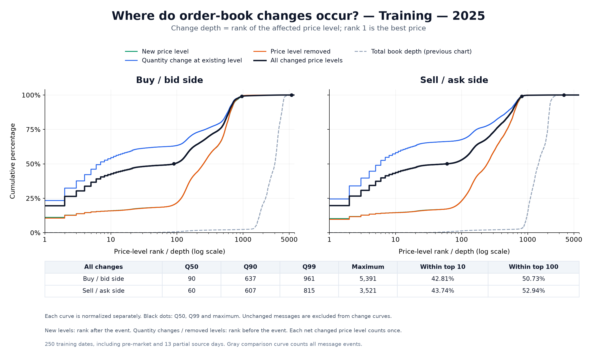
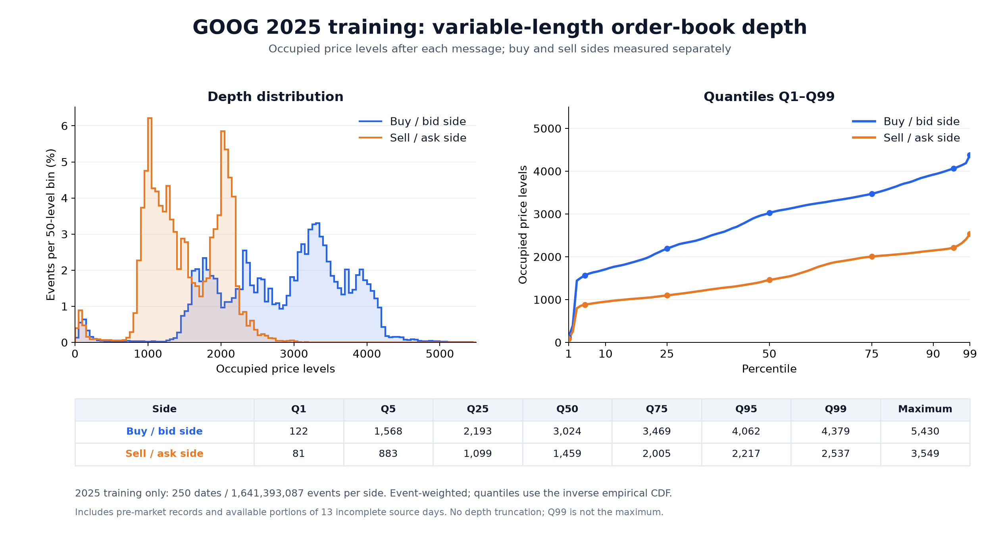

TL;DR: Correct actions do not repair an incomplete initial state. Even with every true action in a replay chunk, a top-K starting observation can produce an incorrect order book when an unobserved price level moves into view.
Overview
We study market action generation, where an action is a market event. A dual-encoder model encodes the current action and observation separately, fuses their representations, and predicts the next action. A matching engine then applies that action to its retained state.
Data are trained on or replayed in chunks—for example, 1,000 or 2,000 actions at a time. A true observation is available at every chunk boundary, not just at the start of the trading day. This observation may contain only the top 10 price levels, rather than the full state. Resetting to that observation cannot recover deeper levels or order identities that were never included.
Before evaluating the action model, observation encoder, or state compression, we need to establish that initialization and replay are consistent under true actions. More model capacity, a smaller latent representation, and higher token accuracy cannot by themselves recover missing initial information.
When execution reveals missing state
The same execution can succeed in both engines while their resulting observations diverge. The sell-side example below separates the observed top three levels from the deeper, non-observed state.

1Initialize. Both observations contain \(100\times10\), \(101\times20\), and \(102\times30\). Only the true state also contains \(103\times40\), \(104\times50\), and deeper levels.
2Execute. The same buy action, Buy 10 @ 100, clears the best ask in both states.
3Shift and backfill. Surviving levels move up. The true state brings \(103\times40\) into the third observed level. The truncated reconstruction cannot supply that level because it was never initialized.
One predictor, two operating modes
Let \(a_t\) be the current action, \(s_t\) the full state after applying it, and \(o_t=H(s_t)\) the current observation. The operation \(H\) extracts what the model can see—for example, the top 10 price levels. It is not another prediction model.
The diagrams use a single-step input pair \((a_t,o_t)\). When an action contains multiple tokens, its prediction also conditions on the preceding tokens within that action. This is the design described here, rather than a claim that a particular implementation’s loader or cache has been verified.
The next-token predictor is identical in training and inference. Both use the same action encoder, observation encoder, fused backbone, and prediction head. The model predicts an action; the engine updates the state.
{kind=link}

{kind=link}

Token-level training objective
For token \(j\) of the next action, teacher forcing supplies the ground-truth token prefix:
Training computes loss directly from the predicted distribution. Inference instead selects tokens and detokenizes them before the engine applies the complete action.
Why a truncated observation is not closed
The execution example illustrates an information gap. Formally, let \(H_K\) extract the top-\(K\) observation from a full state:
If the observation and next action were sufficient to determine the next observation exactly, a deterministic function \(G_K\) would satisfy the following for every allowed state and action:
But two full states can have identical top-\(K\) observations and reveal different deeper levels after the same action:
The inputs to \(G_K\) would be identical, but the required outputs would differ. Therefore no such deterministic \(G_K\) is correct for all these cases. Deterministic transitions of the full state do not imply deterministic transitions from a truncated observation alone.
What this means in practice
Even a complete, perfectly correct sequence of subsequent actions may fail to reconstruct the true order book. “Complete” here describes the actions within a chunk, not the initial state. Starting from a true but truncated observation, replay can become incorrect without any action-prediction error. Once missing depth moves into view, even the observation returned to the model may be wrong.
That error enters the inference feedback loop: the reconstructed observation becomes the condition for the next action prediction. Trajectory deviations can therefore mix initialization or replay error with prediction error. Token accuracy alone cannot establish that the whole system is correct, and not every trajectory mismatch is a model error.
Training conditions on true observations, while inference conditions on reconstructed observations. Reconstruction error can thus create a mismatch between the inputs seen in the two modes.
Variable length: the order-book state has no fixed input length
The same state representation can have different lengths across time and sides
The following two figures use GOOG 2025 training data only: 250 dates and \(T=1{,}641{,}393{,}087\) available market events, measured event by event with no depth truncation or event subsampling. Pre-market records are included. Vendor source files end early on 13 dates; only the records actually available on those dates are included. The earlier 5K / 50K depths are examples of scale; the figures and their tables report measurements for this sample.
The two distributions measure different quantities:
- Book-length distribution: \(n_t^\sigma\), the number of occupied price levels on side \(\sigma\) after each action. Every event has equal weight; dates and elapsed trading time are not equally weighted.
- Change-position distribution: the rank of a price level on its side when its aggregate quantity changes. Each price level with a net quantity change counts once. A rank shift caused only by deleting an earlier level does not count as a new quantity change.


What is the most appropriate way to handle this variable-length input?